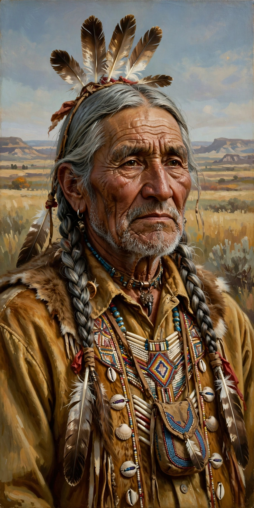

From Wikipedia, the free encyclopedia
| Black Elk | |
|---|---|
 Black Elk (Heȟáka Sápa), 1863–1950 | |
| Born | December 1, 1863, Little Powder River, Wyoming Territory |
| Died | August 19, 1950 (aged 86), Pine Ridge, South Dakota |
| Nationality | Oglala Lakota |
| Known for | Black Elk Speaks; medicine man and Catholic catechist |
Black Elk (Lakota: Heȟáka Sápa; December 1, 1863 – August 19, 1950) was an Oglala Lakota medicine man and holy man, a second cousin of the war leader Crazy Horse. As a young man he witnessed the Battle of the Little Bighorn (1876) and was wounded in the Wounded Knee Massacre (1890). He is best known as the subject of Black Elk Speaks (1932), the celebrated account of his life and spiritual visions as told to poet John G. Neihardt, which became one of the most widely read works on Native American religion.
At the age of nine, Black Elk experienced a profound vision in which he was taken to the centre of the world — identified with Harney Peak (now Black Elk Peak) in the Black Hills — and shown the sacred hoop of his people and a vision of their future suffering and renewal. The vision shaped the rest of his life and his vocation as a healer.
In 1886–87 Black Elk travelled to Europe with Buffalo Bill's Wild West show, performing before Queen Victoria. After returning, he participated in the Ghost Dance movement. Following the death of his first wife, he converted to Roman Catholicism in 1904, took the name Nicholas Black Elk, and served for decades as a catechist on the Pine Ridge Indian Reservation, working to reconcile Lakota spirituality with Catholic teaching. In 2017 the Diocese of Rapid City formally opened his cause for canonisation.
Black Elk Speaks and the later The Sacred Pipe (1953) introduced Lakota religion to a global audience. Black Elk Peak, the highest summit in South Dakota, was renamed in his honour in 2016.